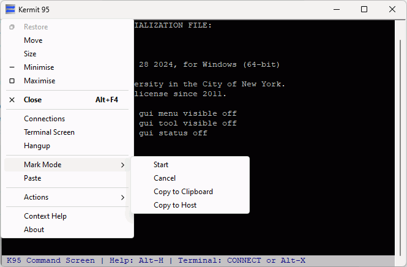

Kermit 95 3.0.0 Beta 7
Kermit 95 3.0.0 Beta 7
Links: K95 3.0.0 Beta 7 on kermitproject.org |
GitHub Release Page
This is the seventh beta of the new open source Kermit 95 for nearly all
32bit and 64bit Windows, and 32bit IBM OS/2! It brings a large number of
new features, bug fixes and other improvements plus
Contents:
Breaking Changes |
New Features |
Minor Enhancements and other changes |
Fixed bugs |
Other Source Changes |
Known Issues |
Reporting Bugs
Breaking Changes
WARNING: This release changes a few default settings and paths! In particular,
the change to the location for storing SSH-related files (known hosts, private
keys, etc) may require a one-off change to your k95custom.ini if you are
upgrading from a previous C-Kermit for Windows Beta release. See the sections
below before upgrading and if you have any questions, feel free to ask in
GitHub Discussions or email
ckw@kermitproject.org.
Things to be aware of when upgrading
The Default SSH Directory has Changed!
The default SSH directory in beta 7 has changed from \v(home).ssh
back to \v(appdata)ssh, the location used by Kermit 95 2.1.3 and
earlier. This means Kermit 95 may not find your known hosts file, or your
identity (public key authentication) files after upgrading to beta 7.
If you'd prefer to keep these files in \v(home).ssh, the same location used
by OpenSSH on modern versions of windows, add the command set ssh directory
\v(home).ssh to your k95custom.ini
Download
This release includes 14 download options covering everything from
Windows NT 3.50 to Windows 11 on all CPU architectures, plus Windows 95/98/ME
and 32bit OS/2. To make finding the right version for your system
easier, you can use the Download Picker,
or you can browse the
list of all download options.
New Features
- SSH Port forwarding (tunneling) is now supported again in both
the Direct/Local and Reverse/Remote forms. You can add forwards before
establishing a connection with SSH ADD { local, remote } and remove all
forwards of a given type with SSH CLEAR { local, remote }. As in past releases
of Kermit 95, these commands don't have any effect on an already established SSH
connection - this may be changed in the future.
- New command to allow removing individual port forwards (SSH REMOVE
{ local, remote }) - previously Kermit 95 only had commands to remove all
forwarded ports of a given type.
- X11 forwarding is back. Turn on with SET SSH X11 ON, and set your display
with SET TELNET ENV DISPLAY
- The SSH backend has been moved into a DLL. On startup, K95 attempts to
load the backend DLL provided the -#2 command line argument has not been
supplied. If no SSH backend gets loaded, you can load one manually with the new
ssh load command. This allows K95 to load the appropriate backend automatically
based on operating system (Windows XP or not) and presence of MIT Kerberos for
Windows. This removes the need to manually shuffle around ssh.dll variants, and
also means that alternative SSH backends not based on libssh can now be supported
should anyone want to build one, opening the door to SSH on vintage windows or
OS/2 systems.
- SSH is now supported on 32bit ARM devices (Windows RT) for the first time
- Initial very limited SSH agent support has been added. Libssh is currently the
limiting factor here and SSH agent support in K95 likely won't get much better
without significant improvements to libssh in this area. See the SSH Readme
for more details.
- REXX support has been extended to x86 systems running Windows XP or newer. This
was previously an OS/2-only feature. You can now run REXX scripts and commands
from the K95 command mode with the rexx command, and REXX scripts run from
K95 can execute any Kermit 95 command by enclosing the K95 command in single
quotes (eg, 'set parity none'). For full details, see the REXX section of
the K95 manual: https://kermitproject.org/k95manual/os2k95.html#os2rexx. The
REXX implementation is the current Regina REXX release. regutil.dll is included
but note that the Console I/O Routines it provides are not currently compatible
with K95. The rexxre.dll external function package is also included providing
support for POSIX regular expressions.
- New command to turn the menubar on or off: set gui menubar visible { on, off }
When the menubar is turned off in this way (rather than with the command line
parameter), important menu items are moved on to the system/control/window menu
(right-click on the title bar for the actions menu and a few other things):

- New command to turn the toolbar on or off: set gui toolbar visible { on, off }
- New command to turn the statusbar on or off: set gui statusbar { on, off }
- New screen scroll kverbs:
- \Kuphscn - Scroll up half a screen
- \Kdnhscn - Scroll down half a screen
- IBM OS/2 support is back! It should work on IBM OS/2 2.0 or newer with
optional TCP/IP support provided by IBM TCP/IP 2.0 or newer. No SSH or
Presentation Manager GUI as in past Kermit/2 releases. Additionally:
- No PC/TCP 1.2 or IBM TCP/IP 1.2.1 support (no SDK license; the DLLs from
K95 2.1.2 should work if you need it)
- No dialer yet (crashes when built with Open Watcom)
- No SSL/TLS support (can't be built with Open Watcom)
- No legacy telnet encryption (no longer useful, but may return in a future
release anyway)
- Reimplemented the three checkboxes in the Dialers GUI settings page for the
menu bar, toolbar and status bar. These options were new in Kermit 95 2.1.3
but were not present in previous open source releases of the dialer as it's
based on code from K95 2.1.2. Any dialer entries edited with the dialer from
C-Kermit for Windows betas 4-6, or Kermit 95 2.1.2 or older, will have these
checkboxes default to ON. Entries last edited with the K95 2.1.3 dialer will
have these three settings preserved. Turning off the GUI bars in this way does
so via command line arguments rather than the new set gui commands so they
can't be turned back on with the new set gui commands.
- Added support xterms Bracketed Paste feature
- Most of the users guide has been revised for this release and is now included
as part of the release. The Kermit Security Reference and sections dealing
with installing and uninstalling kermit 95 are still waiting to be overhauled.
Minor Enhancements and other changes
- All executables (.exe, .dll) now have proper versioninfo resources
- Upgraded to OpenSSL 3.4 which fixes a number of bugs and security issues and
will receive security fixes until October 2026.
- K95G no longer opens COM1 by default. If you still want this behaviour, add
set port com1 to your k95custom.ini
- The command set gui toolbar off has been renamed to
set gui toolbar disabled to better describe what it actually does and to
make room for new commands to turn it on and off. The previous syntax
(set gui toolbar { off, on }) is still accepted for compatibility with
existing scripts. set gui toolbar on still does nothing as it always has
(disabling the toolbar is a session lockdown feature)
- The command set gui menubar off has been renamed to
set gui menubar disabled to better describe what it actually does and to
make room for new commands to turn it on and off. The previous syntax
(set gui menubar { off, on }) is still accepted for compatibility with
existing scripts. set gui menubar on still does nothing as it always has
(disabling the menubar is a session lockdown feature)
- Implemented the set ssh identity-file command
- Added new command set ssh directory which allows you to set the default
location where K95 looks for user known hosts and identity files.
- The default SSH directory has changed from \v(home).ssh back to
\v(appdata)ssh
- The ssh key commands will now default to opening or saving keys in the
SSH directory.
- The skermit command now has help text
- The default mouse wheel configuration has changed:
- Wheel up/down now scrolls up/down half a screen (like PuTTY) rather than a
single line. This provides better much speed than a line at a time with
better usability than a screen at a time.
- Shift+Wheel up/down now scrolls up/down one line
- Improve exit time when the console version (k95.exe) is just being run to show
usage information (k95.exe -h or k95.exe --help). Previously K95 would
pause for about 5 seconds after printing usage information before returning
you to the shell.
- Fixed the telnet.exe and rlogin.exe stubs - these now behave as in K95
2.1.3
- Added the ssh.exe, ftp.exe and http.exe stubs that were included in
K95 2.1.3
- iksdnt.exe is now included.
Fixed bugs
- Fix fopen causing a crash. This issue seems to have come in some recent
version of the Microsoft C Runtime.
- Fix hitting backspace in an empty search-in-buffer crashing
- Fix pty dir (or trying to run anything else that isn't a valid program)
causing a crash
- Fixed POTS modem support not being available on NT 3.50
- Fixed OpenSSL libraries not being included in the ARM32 distribution
- Fixed \Kexit (Alt+x by default) not updating the state of the associated
toolbar button
- Fix the SSH global known hosts file not being set to something sensible
on windows. It's now set to the value used by past Kermit 95 releases by
default: \v(common)ssh\known_hosts2
- Fixed generation of 4096 RSA SSH keys
- Fixed stdout parameter not working correctly
- Fixed a pair of issues in the OS/2 NetBIOS implementation which has likely
been totally broken since Kermit 95 v1.1.17:
- SET HOST doing nothing for NetBIOS connections
- NetBIOS name not being correctly padded when making a connection to
a NetBIOS Server
- Fixed emacs turning off mouse reporting when started
- Fixed K95G hanging when closing the window or using File->Exit with when
a connection is active and GUI dialogs are turned off
- Fixed K95 bug 797: Dialer generated connection scripts will no longer include
SET LOGIN PROMPT or SET LOGIN PASSWORD commands if those fields do not
have a value as this broke the use of the standard login.ksc script.
- Fixed K95 bug 770: When editing an FTP entry in the dialer the general settings
page doesn't load the port number causing it to be cleared on save.
- Fixed TYPE command error "The /HEIGHT switch is not supported without /GUI"
when the /HEIGHT switch has not been supplied.
Other Source Changes
- Fixed a selection of build warnings, and improved compatibility with the
Open Watcom compiler.
Known Issues
- 32bit x86 K95 may crash on 64bit systems that have the 64bit version of
MIT Kerberos for Windows installed. Use the 64bit version of K95 instead
if you experience this problem (or install the 32bit version of KFW)
- When launching the dialer you may get an error about ctl3d32.dll - if
you do, run ctl3dins.exe to install it
- The dialer may fail to start on some systems
- On the original retail release of Windows 95 (possibly all versions of
Windows 95), the GUI version of C-Kermit constantly steals focus and
performs poorly. The solution at this time is to run the console version,
k95.exe
- The dialer is not currently available on Windows NT 3.50 - this may be
corrected in a future release
- Networking is broken on Windows NT 3.10 - this may be corrected
in a future release.
Other known bugs can be found in the K95 issue tracker on GitHub.
Reporting Bugs
If you think you've found a bug in K95 you can either send an email to
ckw@kermitproject.org or you can
log it directly in the
K95 Issue Tracker on GitHub